Plotting#
Introduction#
This tutorial describes skrf’s plotting features. If you would like to use skrf’s matplotlib interface with skrf styling, start with this
[1]:
%matplotlib inline
[2]:
from matplotlib import pyplot as plt # for advanced smith chart only
import skrf as rf
Plotting Methods#
Plotting functions are implemented as methods of the Network class.
Network.plot_s_reNetwork.plot_s_imNetwork.plot_s_magNetwork.plot_s_db…
Similar methods exist for Impedance (Network.z) and Admittance Parameters (Network.y),
Network.plot_z_reNetwork.plot_z_im…
Network.plot_y_reNetwork.plot_y_im…
Smith Chart#
As a first example, load a Network and plot all four s-parameters on the Smith chart.
[3]:
from skrf import Network
ring_slot = Network('data/ring slot.s2p')
ring_slot.plot_s_smith()
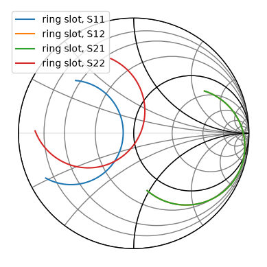
scikit-rf includes a convenient command to make nicer figures quick:
[4]:
rf.stylely() # nicer looking. Can be configured with different styles
ring_slot.plot_s_smith()
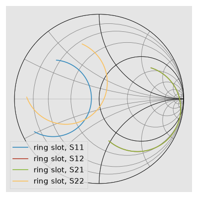
[5]:
ring_slot.plot_s_smith(draw_labels=True)
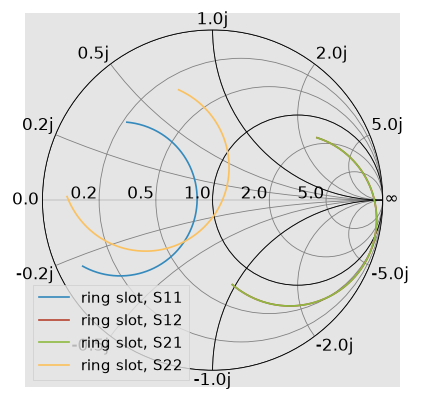
Another common option is to draw admittance contours, instead of impedance. This is controlled through the chart_type argument.
[6]:
ring_slot.plot_s_smith(chart_type='y')
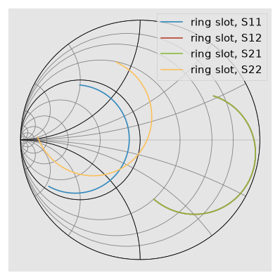
Advanced Smith Chart with markers#
The Smith Chart is a convenient plot that shows complex numbers with real and imaginary parts from zero to infinity with a zoom on a real reference in the center region. It is, however, not straightforward to figure out what point is related to which frequency because there is no frequency axis. A common workaround is to provide some frequency markers related to a table.
[7]:
# prepare markers
lines = [
{'marker_idx': [30, 60, 90], 'color': 'g', 'm': 0, 'n': 0, 'ntw': ring_slot},
{'marker_idx': [15, 45, 75], 'color': 'r', 'm': 1, 'n': 0, 'ntw': ring_slot},
]
# prepare figure
fig, ax = plt.subplots(1, 1, figsize=(7,8))
# impedance smith chart
rf.plotting.smith(ax = ax, draw_labels = True, ref_imm = 50.0, chart_type = 'z')
# plot data
col_labels = ['Frequency', 'Real Imag']
row_labels = []
row_colors = []
cell_text = []
for l in lines:
m = l['m']
n = l['n']
l['ntw'].plot_s_smith(m=m, n=n, ax = ax, color=l['color'])
#plot markers
for i, k in enumerate(l['marker_idx']):
x = l['ntw'].s.real[k, m, n]
y = l['ntw'].s.imag[k, m, n]
z = l['ntw'].z[k, m, n]
z = f'{z.real:.4f} + {z.imag:.4f}j ohm'
f = l['ntw'].frequency.f_scaled[k]
f_unit = l['ntw'].frequency.unit
row_labels.append(f'M{i + 1}')
row_colors.append(l['color'])
ax.scatter(x, y, marker = 'v', s=20, color=l['color'])
ax.annotate(row_labels[-1], (x, y), xytext=(-7, 7), textcoords='offset points', color=l['color'])
cell_text.append([f'{f:.3f} {f_unit}', z])
leg1 = ax.legend(loc="upper right", fontsize= 6)
# plot the table
the_table = ax.table(cellText=cell_text,
colWidths=[0.4] * 2,
rowLabels=row_labels,
colLabels=col_labels,
rowColours=row_colors,
loc='bottom')
the_table.auto_set_font_size(False)
the_table.set_fontsize(6)
#the_table.scale(1.5, 1.5)
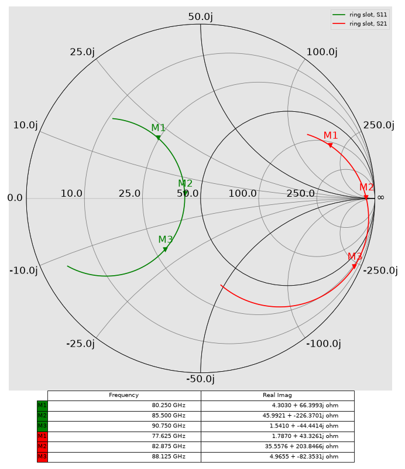
Advanced Smith Chart with background#
The Smith Chart can be drawn above a high-resolution Smith Chart background (or another image upon your fantasy).
[8]:
# prepare figure
fig, ax = plt.subplots(1, 1, figsize=(8,8))
background = plt.imread('figures/smithchart.png')
# tweak background position
ax.imshow(background, extent=[-1.185, 1.14, -1.13, 1.155])
rf.plotting.smith(ax = ax, draw_labels = True, ref_imm = 1.0, chart_type = 'z')
ring_slot.plot_s_smith(ax = ax)
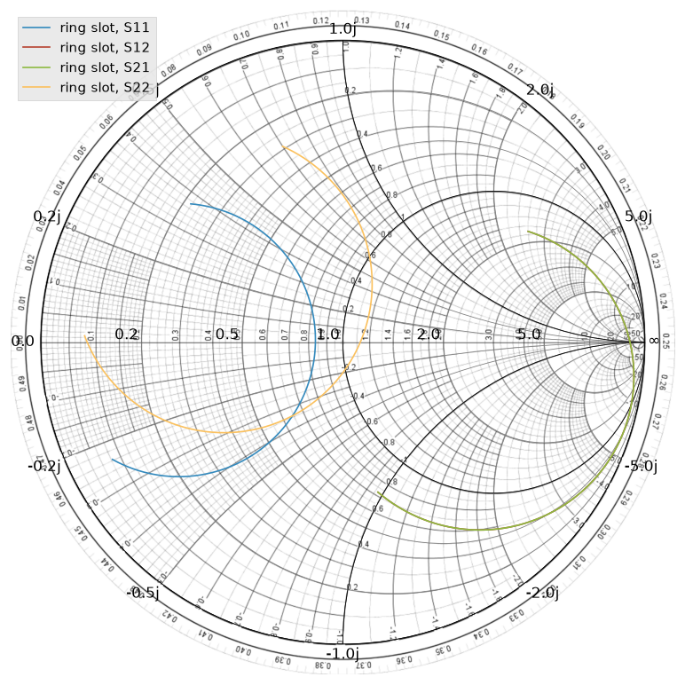
See skrf.plotting.smith() for more info on customizing the Smith Chart.
Complex Plane#
Network parameters can also be plotted in the complex plane without a Smith Chart through Network.plot_s_complex.
[9]:
from matplotlib import pyplot as plt
ring_slot.plot_s_complex()
plt.axis('equal') # otherwise circles won't be circles
[9]:
(np.float64(-0.855165798772),
np.float64(0.963732138327),
np.float64(-0.8760764348472001),
np.float64(0.9024032182652001))
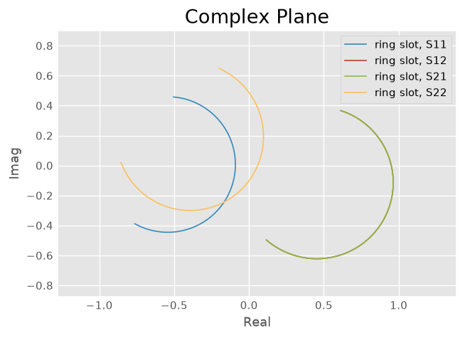
Log-Magnitude#
Scalar components of the complex network parameters can be plotted vs frequency as well. To plot the log-magnitude of the s-parameters vs. frequency,
[10]:

When no arguments are passed to the plotting methods, all parameters are plotted. Single parameters can be plotted by passing indices m and n to the plotting commands (indexing start from 0). Comparing the simulated reflection coefficient off the ring slot to a measurement,
[11]:
from skrf.data import ring_slot_meas
ring_slot.plot_s_db(m=0,n=0, label='Theory')
ring_slot_meas.plot_s_db(m=0,n=0, label='Measurement')
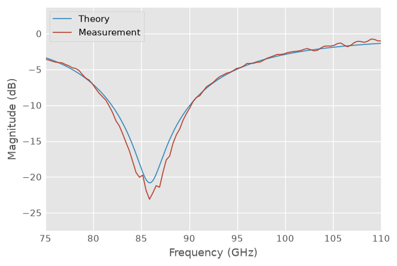
Phase#
Plot phase,
[12]:
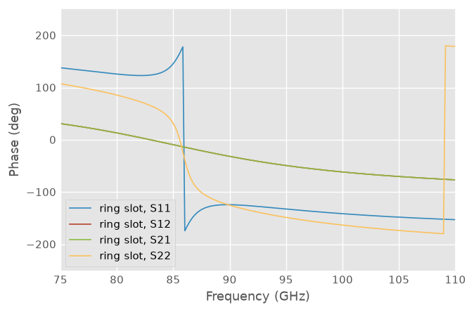
Or unwrapped phase,
[13]:
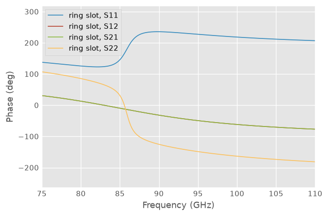
Phase is radian (rad) is also available
Group Delay#
A Network has a plot() method which creates a rectangular plot of the argument vs frequency. This can be used to make plots are aren’t ‘canned’. For example group delay
[14]:
gd = abs(ring_slot.s21.group_delay) *1e9 # in ns
ring_slot.plot(gd)
plt.ylabel('Group Delay (ns)')
plt.title('Group Delay of Ring Slot S21')
[14]:
Text(0.5, 1.0, 'Group Delay of Ring Slot S21')
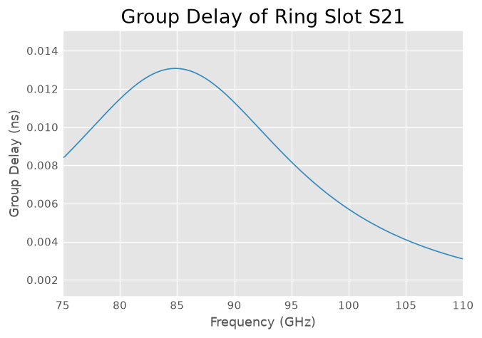
Impedance, Admittance#
The components the Impedance and Admittance parameters can be plotted similarly,
[15]:
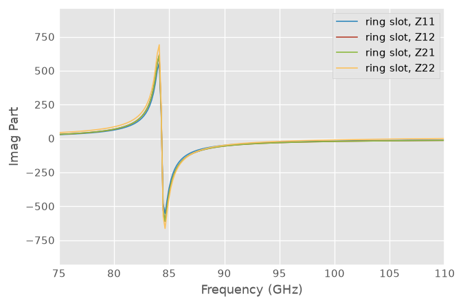
[16]:
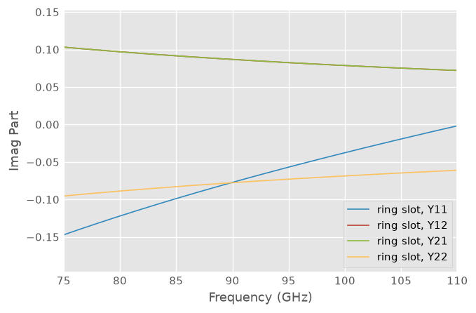
Customizing Plots#
The legend entries are automatically filled in with the Network’s Network.name. The entry can be overridden by passing the label argument to the plot method.
[17]:
ring_slot.plot_s_db(m=0,n=0, label = 'Simulation')
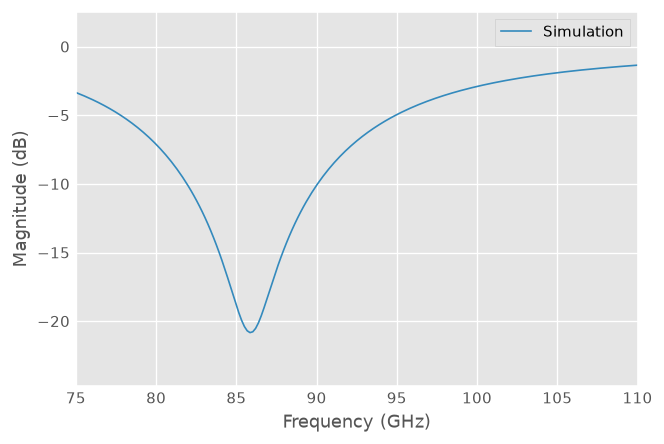
The frequency unit used on the x-axis is automatically filled in from the Networks Network.frequency.unit attribute. To change the label, change the frequency’s unit.
[18]:
ring_slot.frequency.unit = 'mhz'
ring_slot.plot_s_db(0,0)
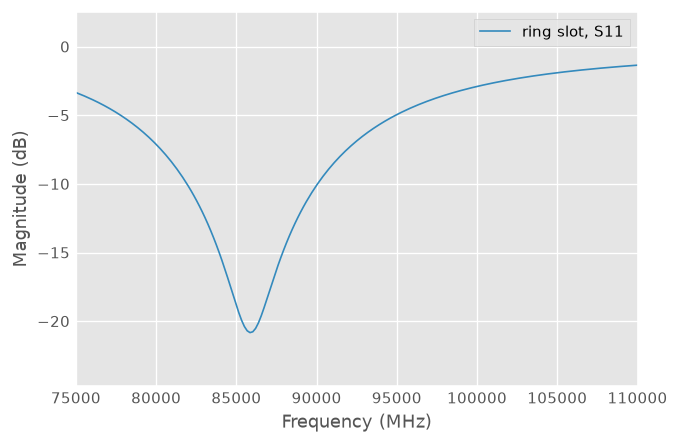
Other key word arguments given to the plotting methods are passed through to the matplotlib matplotlib.pyplot.plot function.
[19]:
ring_slot.frequency.unit='ghz'
ring_slot.plot_s_db(m=0,n=0, linewidth = 3, linestyle = '--', label = 'Simulation')
ring_slot_meas.plot_s_db(m=0,n=0, marker = 'o', markevery = 10,label = 'Measured')
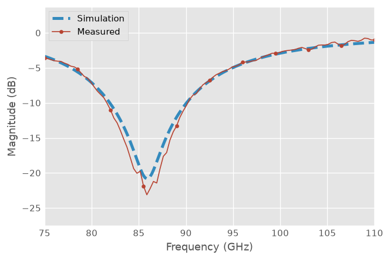
All components of the plots can be customized through matplotlib functions, and styles can be used with a context manager.
[20]:
from matplotlib import pyplot as plt
from matplotlib import style
mpl_style = "seaborn-ticks"
mpl_style = mpl_style if mpl_style in style.available else "seaborn-v0_8-ticks"
with style.context(mpl_style):
ring_slot.plot_s_smith()
plt.xlabel('Real Part')
plt.ylabel('Imaginary Part')
plt.title('Smith Chart With Legend Room')
plt.axis([-1.1,2.1,-1.1,1.1])
plt.legend(loc=5)
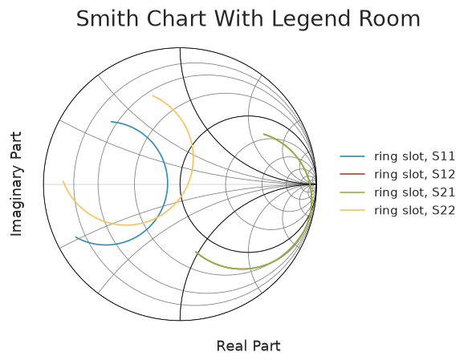
Saving Plots#
Plots can be saved in various file formats using the GUI provided by the matplotlib. However, skrf provides a convenience function, called skrf.plotting.save_all_figs, that allows all open figures to be saved to disk in multiple file formats, with filenames pulled from each figure’s title,
[21]:
from skrf.plotting import save_all_figs
save_all_figs('data/', format=['png','eps','pdf'])
Adding Markers Post Plot#
A common need is to make a color plot, interpretable in greyscale print. The skrf.plotting.add_markers_to_lines adds different markers each line in a plots after the plot has been made, which is usually when you remember to add them.
[22]:
from skrf import plotting
with plt.style.context('grayscale'):
ring_slot.plot_s_deg()
plotting.add_markers_to_lines()
plt.legend() # have to re-generate legend
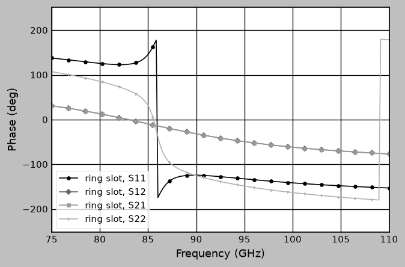
[ ]: